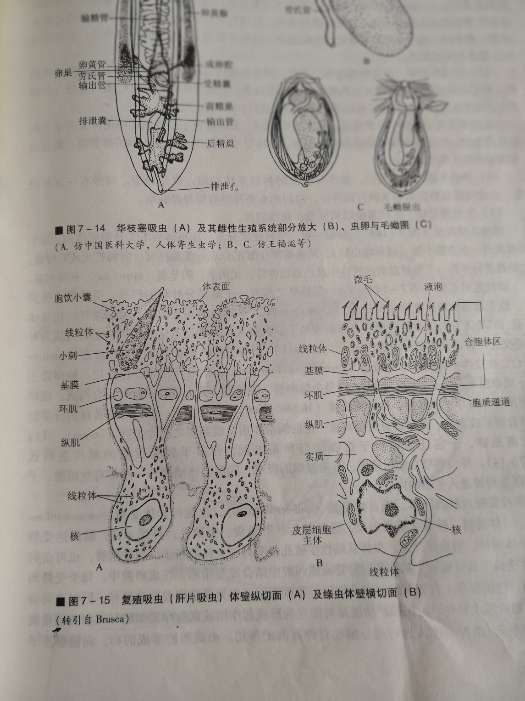
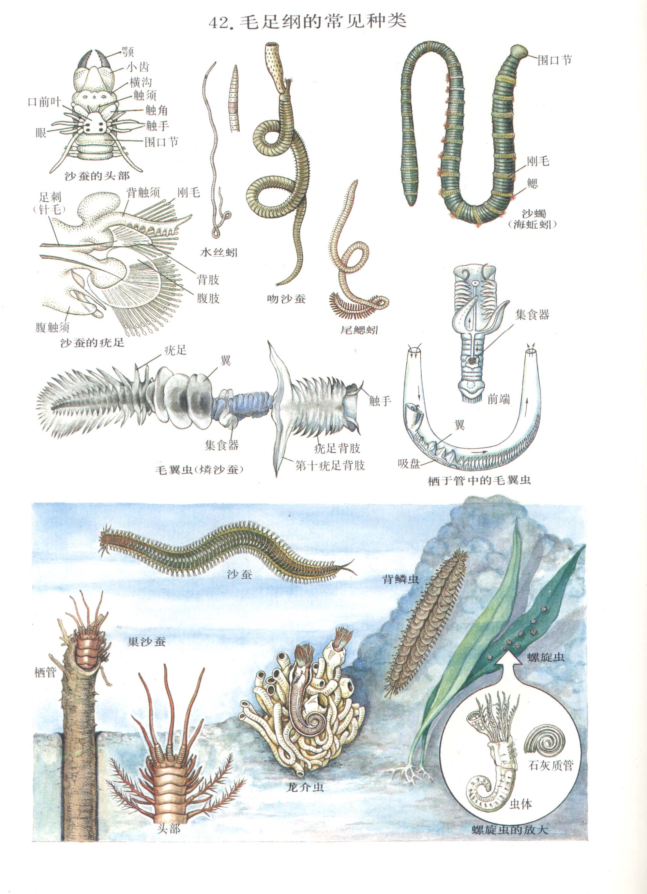

最简单的两侧对称 · 三胚层 · 无体腔
一、扁形动物概述：动物演化的关键节点
扁形动物是动物界首次出现两侧对称（bilateral symmetry）、首次出现中胚层（mesoderm）的一类动物。但只有体壁中胚层，无脏壁中胚层 → 无体腔（acoelomate），故称"无体腔动物"。
- 两侧对称：身体分前/后、背/腹、左/右；头部形成，神经系统集中，便于定向运动和主动摄食，是动物由水生向陆生演化的基本条件之一。
- 中胚层：产生肌肉组织、结缔组织、生殖器官 → 运动能力增强，结构复杂化。
- 皮肌囊（dermo-muscular sac）：体壁由外胚层形成的表皮 + 中胚层形成的肌肉（环肌、纵肌、斜肌）组成，是扁形动物特有的结构。
- 消化系统：有口无肛门 → 不完全消化系统（gastrovascular cavity），肠壁无肌肉层；寄生种类消化系统趋于退化甚至完全消失。
- 排泄系统：原肾管（protonephridium），由焰细胞（cap cell + tubule cell）组成，起源于外胚层，主要调节体内水分。
- 神经系统：梯状神经系统（ladder-type），前端"脑"由咽前神经节组成，但无神经节分化。
- 生殖系统：中胚层形成固定的生殖腺、生殖导管和附属腺体；大多雌雄同体，交配+体内受精；海产种类具牟勒氏幼虫（Müller's larva）。
二、代表动物——三角涡虫（Dugesia）
分布：淡水溪流石块下，柳叶形，背腹扁平，长 10–15 mm。头部三角形，具耳突（化学感受器）和 2 个眼点（仅感光不成像）。
结构要点：
- 皮肌囊：腹面有纤毛，辅以肌肉收缩实现滑行运动。
- 消化系统：口→咽（可伸出）→三支肠（具盲端）→无肛门。既有细胞内消化又有细胞外消化（腔肠外消化为主）。
- 排泄系统：原肾管，由焰细胞（内有纤毛束不断摆动驱动液体）、毛细管、排泄管、排泄孔组成，主要功能是排出多余水分。
- 神经系统：前端"脑"→两条腹神经索→多条横神经，呈梯状。
- 生殖：雌雄同体，体内受精；再生能力极强——横切后每段都能再生为完整个体。
三、扁形动物分类：三大纲对比
| 特征 | 涡虫纲 Turbellaria | 吸虫纲 Trematoda | 绦虫纲 Cestoda |
|---|---|---|---|
| 生活方式 | 自由生活 | 内/外寄生 | 内寄生（肠道） |
| 体表 | 有纤毛 | 无纤毛，具皮层 | 无纤毛，具微毛 |
| 消化系统 | 发达 | 退化但有口吸盘 | 完全消失 |
| 感官 | 眼点、耳突 | 退化 | 完全退化 |
| 代表种 | 三角涡虫、平角涡虫 | 华枝睾吸虫、日本血吸虫、肝片吸虫 | 猪带绦虫、牛带绦虫、细粒棘球绦虫 |
四、吸虫纲重点：华枝睾吸虫与日本血吸虫
华枝睾吸虫（Clonorchis sinensis）：寄生于人、猫的肝胆管内，长 15–25 mm，柔软柳叶形，具口吸盘+腹吸盘。两个分支状精巢（"枝睾"）。生活史：
日本血吸虫（Schistosoma japonicum）：雌雄异体，雄虫粗短（15 mm）具抱雌沟，雌虫细长（12–26 mm）。寄生于人畜的肠系膜静脉。

五、绦虫纲重点：猪带绦虫的结构与生活史
对寄生生活的高度适应（也是绦虫特征）：
- 纤毛消失，感官完全退化
- 消化系统完全消失，靠体表微毛渗透吸收寄主营养
- 体表微毛（microtriches）→ 极大增加吸收面积
- 身体呈背腹扁平的带状，由大量节片（proglottids）组成，繁殖力极发达（如鱼绦虫可达 3000–4000 片）
- 头部特化附着器官：吸盘、小钩（顶突）等
猪带绦虫（Taenia solium）结构：头节（scolex，4 个吸盘+1 顶突带 2 圈小钩）→ 颈节（ne ck，不断分裂产生新节片）→ 链体（strobila，幼节片→成节片→孕节片）。人吃含囊尾蚴的"米猪肉"感染。
六、纽形动物门（附门）：演化的过渡桥梁
纽形动物门（Nemertea）与扁形动物同属于"无体腔动物"，但出现重要进步：
- 消化系统完整：有口有肛门
- 出现闭管式循环系统（具血管，血液在血管中定向流动，部分种类含血红蛋白）
- 大多雌雄异体，发育有直接的，也有与担轮幼虫相似的帽状幼虫
真体腔 · 同律分节 · 闭管式循环
七、环节动物概述：动物演化的"第二次飞跃"
环节动物门的出现标志着动物演化史的第二次重大飞跃（第一次是原始单细胞→多细胞），包括两大创新：
- 真体腔（true coelom，secondary body cavity）：来源于中胚层裂开形成的腔（肠体腔），由体壁中胚层和脏壁中胚层共同包被。意义：① 消化管产生肌肉层 → 消化能力增强；② 消化管具中胚层 → 消化系统复杂化；③ 循环、排泄、生殖结构更复杂、功能更完善。
- 身体分节（metamerism）：身体由许多形态相似的体节构成，是环节动物的重要特征。
主要特征：
- 同律分节（homonomous metamerism）：除前 2 节和最后 1 节外，其余体节形态和机能基本相同。异律分节（heteronomous）则为头、胸、腹分化提供可能，是节肢动物出现的前提。
- 具疣足（parapodium，多毛纲）和刚毛（seta）——不分节的运动器官。
- 闭管式循环系统（closed circulatory system）：纵行血管+环血管+分支血管，血液始终在血管内流动。蚯蚓血红蛋白溶于血浆。
- 后肾管（metanephridium）：两端开口（肾口+肾孔），由外胚层形成，主要功能是排出含氮废物和平衡渗透压。
- 链式（索式）神经系统：脑（咽上神经节）+ 围咽神经 + 咽下神经节 + 腹神经链（每节一对神经节）。
- 雌雄同体或异体；海产种类发育经担轮幼虫（trochophore）。
八、环节动物分类：三纲对比
| 特征 | 多毛纲 Polychaeta | 寡毛纲 Oligochaeta | 蛭纲 Hirudinea |
|---|---|---|---|
| 生活方式 | 海产为主 | 大多陆生/淡水 | 半寄生（吸血） |
| 附肢 | 有疣足，疣足上有刚毛 | 无疣足，有刚毛（体壁上） | 无疣足、无刚毛，有吸盘 |
| 生殖环带 | 无 | 有 | 有 |
| 排泄 | 大多后肾管（少数原肾管） | 后肾管 | 后肾管 |
| 循环 | 大多闭管式 | 闭管式 | 开管式（体腔被填充） |
| 生殖 | 雌雄异体，异沙蚕相，担轮幼虫 | 雌雄同体，直接发育 | 雌雄同体，直接发育 |
| 代表 | 沙蚕 Nereis | 环毛蚓 Pheretima | 医蛭 Hirudo |
九、代表动物蚯蚓（Pheretima 环毛蚓）的解剖
对土壤生活的适应：
- 体表具粘液腺（保持体表湿润、辅助呼吸）
- 头部退化（土壤中无需复杂感觉），眼点退化但感光细胞在体前后部最多
- 疣足退化，刚毛着生在体壁上（辅助爬行和交配）
- 口前叶可伸缩，具掘土功能
- 第 XIV–XVI 节形成生殖环带（clitellum）
消化系统：口 → 咽（咽头腺分泌粘液和蛋白酶）→ 食道（钙腺调节酸碱）→ 砂囊（磨碎食物）→ 胃（血管多、腺体发达）→ 肠（自第 26 节起具盲肠一对，肠腔内壁有盲道增加消化吸收面积）→ 肛门。
循环系统（闭管式）：
- 背血管（1 条，能搏动）
- 心脏（4–6 对，环血管，位于第 7、9、12、13 节等）
- 食道侧血管（2 条）
- 腹血管（1 条，不能搏动）
- 神经下血管（1 条）
血液红色：血红蛋白（erythrocruorin）溶于血浆，是动物界少见的"血浆血红蛋白"。
呼吸：皮肤呼吸，体表必须保持湿润（这也是为什么蚯蚓怕光、怕干燥）。
生殖：雌雄同体，异体交配，交配时两条蚯蚓头部反向相互靠近，以生殖带分泌粘液管包裹双方，交换精子。卵产于卵茧中（由环带分泌物形成），受精卵在卵茧中直接发育为小蚯蚓。

十、蛭纲（水蛭）：特殊的寄生适应
与吸血相适应的结构特点：
- 前后吸盘（前吸盘小，后吸盘大）—— 吸附寄主
- 口腔 3 个颚上具细齿——切开皮肤
- 咽辐射肌发达——吸取血液
- 唾液腺分泌蛭素（hirudin）—— 抗凝血
- 嗉囊 11 对侧盲囊——可贮存大量血液（一次吸血可保活数月）
- 肠道内具蛭假单胞杆菌——消化血液
蛭类体腔被间质或葡萄状组织填充，血管完全消失成血窦，循环系统为开管式。血液 = 体腔液。
十一、担轮幼虫（Trochophore）：演化的活化石证据
担轮幼虫是环节动物海产种类（如沙蚕）发育中的一个特殊时期：
- 形似陀螺，顶部有顶纤毛束
- 赤道处有原肾管和口前的纤毛环（prototroch）
- 无体节、无体腔——保留"原始"特征
重要性：软体动物、腕足动物、苔藓动物的发育也经历担轮幼虫期，说明这四类动物在演化上有密切的亲缘关系，被归入"担轮动物（Trochozoa）"演化支。
关键概念辨析与联赛考点
深度 1 · "无体腔 vs 假体腔 vs 真体腔"三体腔辨析
| 项目 | 无体腔（acoelomate） | 假体腔（pseudocoel） | 真体腔（true coelom） |
|---|---|---|---|
| 来源 | 无 | 胚胎囊胚腔残余 | 中胚层裂开形成 |
| 别称 | — | 初生体腔（primary body cavity） | 次生体腔（secondary body cavity） |
| 体腔膜 | 无 | 无（无脏壁中胚层） | 有（体壁+脏壁中胚层） |
| 代表 | 扁形、纽形 | 线虫、轮虫 | 环节及以后 |
| 意义 | 简单充填组织 | 体腔液→流体静力骨骼 | 消化道肌肉化、复杂器官 |
记忆：无体腔动物有中胚层，但中胚层没"包"出腔；假体腔只是囊胚腔的"剩菜"；真体腔是中胚层"主动挖"的洞。
深度 2 · 同律分节 vs 异律分节：演化的两次飞跃
同律分节（homonomous metamerism）：除头尾外各体节形态、机能基本相同。
异律分节（heteronomous metamerism）：体节分化明显，形成头、胸、腹等机能分工。
- 环节动物 → 同律分节（如蚯蚓每节相似）
- 节肢动物 → 异律分节（如蝗虫分头/胸/腹）
- 异律分节是"动物体结构高度集中化"的开始
意义：异律分节为头部的形成和感觉器官的集中提供了形态学基础，是节肢动物"高等化"的前提。
深度 3 · 寄生虫的"高度适应"特征模板
所有内寄生动物都遵循以下适应模式（扁形、线虫、节肢均可套用）：
- 运动器官退化，体表无纤毛（避免与寄主免疫系统正面冲突）
- 具附着器官（吸盘、钩、倒刺）
- 消化系统退化甚至消失（依靠体表渗透吸收预消化营养）
- 神经系统不发达，感官退化
- 生殖器官极其发达，生活史复杂、需要中间宿主
- 具抗寄主免疫机制（如血吸虫表面披覆寄主抗原、囊蚴壁保护）
深度 4 · 演化线：从两侧对称到真体腔的里程碑
本节知识回顾（联赛要求）
- 扁形动物是首次出现两侧对称 + 中胚层的动物，但只有体壁中胚层，无体腔。原肾管起源于外胚层，梯状神经。
- 三大纲：涡虫纲（自由，纤毛）、吸虫纲（寄生，吸盘）、绦虫纲（寄生，消化消失）。
- 日本血吸虫生活史：虫卵→毛蚴→钉螺→尾蚴→人（皮肤钻入），无囊蚴期。
- 环节动物创新：真体腔 + 同律分节 + 闭管式循环 + 链式神经 + 后肾管。
- 三纲比较：多毛（疣足，海产，担轮幼虫）、寡毛（刚毛，陆生，直接发育）、蛭（吸盘，吸血，开管式循环）。
- 蚯蚓是"血液在血管中能定向流动的最低等动物"；皮肤呼吸需体表湿润；血红蛋白溶于血浆。
- 担轮幼虫是环节、软体、腕足共有的发育期，反映其亲缘关系（同属 Trochozoa 演化支）。
高中衔接与课标差距
人教版 2019 新教材在选择性必修 2 "生物与环境" 中提及扁形（血吸虫）和环节（蚯蚓）的生态学意义；本节内容在人教版必修 1 第一章（细胞结构）和选择性必修 2中有所涉及，但深度远不够。
联赛层面超出课标之处：
- 原肾管 vs 后肾管（外胚层起源）的精确辨析
- 同律分节 vs 异律分节的演化意义
- 真体腔 = 裂体腔的胚层来源（中胚层裂开）
- 血吸虫生活史中的"钉螺"地位与"经皮肤钻入"细节
- 绦虫消化系统完全消失、皮层微毛吸收
- 环节三纲的循环系统差异（多毛/寡毛闭管 vs 蛭开管）
- 担轮幼虫的演化证据意义